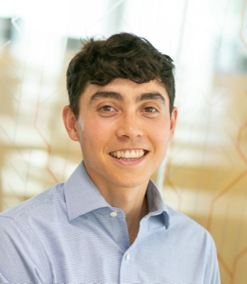

Methods and caveats
What the numbers mean
- Accepted abstracts only. The booklets list abstracts that were accepted, and authors can ask for a poster. “Talk rate” is the fraction of accepted abstracts presented as a talk (platform or plenary); it is not an acceptance rate or a quality score.
- Associations, not causes. A phrase that is common in talks may simply mark a field or a large consortium that tends to get talks; it does not make an abstract more likely to be picked.
- Small numbers are noisy. Every share comes with a 95% interval; wide intervals mean little can be said.
- What is not shown. The site never names an institution, country, metro area or person for having no talks: those rows are left out of the tables and figures here. World regions are shown in full. The complete aggregate tables are in the repository.
- Not every abstract is matched. Institution, metro and country tables only count abstracts whose affiliations could be matched; see below.
Match rates
The share of abstracts whose author could be placed. An abstract counts as matched if at least one of the author's affiliations resolves to one of the 213 listed institutions (or a metro area, or a country). Unmatched abstracts still count toward the totals, the talk rate and the phrases, but drop out of the institution, metro and country tables. The institution list was built from the institutions with the most abstracts, so unmatched abstracts come mostly from institutions with fewer: rankings describe the listed institutions, not everyone. In 2026 fewer affiliations matched (63% of first authors), so its institution and metro tables cover fewer abstracts. Senior-author rates are over abstracts not cut off in the booklet.
| Year | Abstracts | First author | Senior author | ||||
|---|---|---|---|---|---|---|---|
| Institution | Metro | Country | Institution | Metro | Country | ||
| 2022 | 2,928 | 69% | 66% | 100% | 69% | 66% | 99% |
| 2023 | 3,330 | 71% | 67% | 100% | 70% | 66% | 100% |
| 2024 | 2,950 | 72% | 68% | 100% | 72% | 68% | 100% |
| 2025 | 3,154 | 70% | 67% | 93% | 71% | 67% | 93% |
| 2026 | 2,965 | 63% | 61% | 94% | 64% | 61% | 94% |
| All years | 15,327 | 69% | 66% | 97% | 69% | 66% | 97% |
Talk rate by year
The share of accepted abstracts presented as a talk ranges from 8.3% to 11.9% by year. Every talk rate on this site is compared with its own year's rate, or with the pooled rate for all years.

Find talks
The Find talks page links each ASHG 2026 abstract to its closest neighbors. It shows only the first author, track, type, poster board, time (Montréal) and a match percentage; no titles or abstract text are published, and the data file contains none.
Besides the poster, platform and plenary abstracts it includes the featured symposia (one entry per talk, with the speaker as author) and the program's other CME sessions (workshops, short courses and symposia listed only as a whole), matched on their program descriptions and linked to their program entry. Lightning talks are not entries of their own: each is a poster's abstract, so the poster shows its lightning-talk time.
A Preprint link appears on an abstract that was matched to a bioRxiv or medRxiv preprint by title and author overlap, when the match is high confidence. These matches are a lower bound, since many preprints are not found. The page shows the preprint's DOI only, not its title or text.
- Text match. Title and abstract are turned into word and two-word counts, weighted with BM25 (so common words count less and long abstracts don't dominate) and compared by cosine similarity. The match percentage is that similarity scaled so that 100 is the 95th percentile of abstracts' closest pairs (the few above it are capped); it is a relative score, not a probability of anything.
- Co-author match. The Jaccard index of two abstracts' author lists (shared authors over all authors), over every author on the abstract, matched by first + last name (middle initials ignored). Two people with the same first and last name merge, and a different spelling of one name is missed.
- Track. Posters take the track in their session name. The program gives talks no track, so a talk gets the most common track among its ten closest posters, marked “inferred” in the tooltip. Rooms for talks aren't in the data.
- Planner link. “Planner” opens the presenter's page in the online program. The presenter is not always the first author.
Landscape
The Landscape page puts every ASHG abstract from 2022 to 2026 on one map. Each abstract is embedded with SPECTER2, a language model for scientific papers (title and abstract, scored as one vector), and the vectors are laid out in two with UMAP (cosine distance, fixed seed). Because the layout is fit once over all the years, a position means the same thing in every year, and an author's abstracts from different years can be joined into a path. Only neighborhoods mean anything: nearby dots read alike, but the gaps between distant clusters and the clusters' sizes are artifacts of the method. No titles or abstract text are published; the data file has each abstract's year, authors, institutions, keywords and nearest matches. Nearest matches and keywords still use the word weighting of Find talks (BM25 on title and abstract), so the match percentages are on the same scale as Find talks.
- Author search. The diamond is the center of an author's abstracts, weighting each by their position on the author list: first author 1.5, last 1.0, middle 0.5. A target marks the abstracts they lead. Authors are matched by first + last name, so two people with one name merge and a different spelling of a name is missed; degrees and titles that the author-block parsing leaves in names (“PhD”, “MD”, “Dr.”) are stripped.
- Web. “Co-authors” joins each of their abstracts to every other abstract that shares one of its co-authors (at most 6,000 lines). “Similar text” joins each to its 15 closest abstracts by the text match on Find talks, shaded by that percentage; matches under 10% are not drawn.
- Keywords. An abstract's keywords are its 25 highest-weighted terms, with spellings that mean the same thing grouped under one label. Terms are grouped by the method behind the phrase rows (terms that share a word and appear in mostly the same abstracts, Jaccard at least 0.45, or one the acronym of the other) and by the abbreviations authors define in their own text, such as “protein-protein interaction (PPI)”, kept only when the abbreviation's letters are the initials of the words before it. This can over-merge: generic words that travel with a topic join its group, so the GWAS group is broader than abstracts that say GWAS.
- Institutions. Only those found for the first and senior author, so about two thirds of abstracts have any.
- Density. Each painted layer is a Gaussian kernel density of its abstracts (bandwidth about 2% of the map's width), scaled to that layer's own peak. Brightness shows where a layer concentrates, not how many abstracts it has; the count is on the layer. “Dots” shows each matching abstract instead.
How it's built
- Parsing. Text is extracted with PyMuPDF and split into abstracts using each booklet's layout (session headers, titles, author blocks, “Abstract:” labels). Every parsed abstract is checked against the booklet's table of contents, and a hand-checked sample is used as a test set. Abstracts cut off mid-text in a booklet count toward totals and first-author credit, but not senior-author credit or the text analyses.
- Institutions. A hand-curated list of 213 institutions and their spelling variants. Schools fold into their university (except Harvard Medical School); NIH institutes fold into NIH; hospitals and independent institutes stay separate.
- Countries and regions. Each author's country comes from the location at the end of their affiliations (“Seoul, Korea, Republic of”; “Boston, MA”), which nearly every affiliation in 2022–2024 has. When there is none (most of 2025–2026), it comes from the resolved institution, else from country, demonym or city names in the affiliation (“Seoul National University”), else from a hand-checked list of the remaining affiliation strings (mostly companies and smaller institutes; LLM-labeled, then spot-checked). Countries are grouped into UN M49 regions, with the Americas split into Northern America and Latin America and the Caribbean. An author with affiliations in several countries counts in full for each, so an abstract can count for several countries (once per region), and rows can add up to more than the total. Because the first source that finds a country is used, an affiliation without its own location can be missed when another one has it; nearly every 2022–2024 affiliation gives a location, so this is rare there. Every 2025 first- and senior-author affiliation was reviewed (LLM pass, each correction checked by hand), and those hand-checked countries take precedence. The 2026 affiliations the other rules miss were labeled the same way (two independent LLM passes, disagreements checked) but not yet reviewed by hand. “Hong Kong, China” counts as Hong Kong only.
- Metro areas. Each institution is mapped by hand to a metro (US Census metropolitan areas, with San Francisco + San Jose combined as the SF Bay Area and Durham–Chapel Hill + Raleigh as the Research Triangle). Institutions with sites in several metros are left out.
- Center of mass. Each abstract sits at its first author's metro area (coordinates of the main city; an abstract with first authors in k metros counts 1/k in each). The center is the geographic midpoint: the mean of those points as 3D unit vectors, projected back to the surface. North America counts US and Canadian metros only (about four in five US and Canadian abstracts have one). Worldwide, an abstract with a country but no metro sits at the center of that country's placed abstracts that year, so every country keeps its full weight. North America is the UN region (US, Canada, Bermuda; Mexico counts as Latin America). Removing host-city first authors drops abstracts with any first author in the host metro; local groups at institutions without a metro stay in. The 95% ranges are from 2,000 bootstrap resamples of abstracts.
- Senior authors. The last listed person (consortium names skipped). Within a year, the same person = same first + last name, and for common surnames (seen with 5+ different first names) also a shared institution. Across years the 2022–2024 booklets give only initials, so the same person = same first initial + last name; surnames seen with 5+ different initials need a shared institution, and two different spelled-out first names (2025–2026) are never merged unless one is a short form of the other (Alex, Alexander).
- Phrases. 1–3-word n-grams from the abstract text, appearing in at least 5 talks (or the equivalent share of posters). Each gets a talk-vs-poster odds ratio with +0.5 smoothing and a 95% CI, ranked by z-score. Phrases that share a word or are an acronym of each other and appear in mostly the same abstracts (Jaccard ≥ 0.45; exact acronyms like “QTLs” always) form one group, shown under its best-ranked member. A narrower phrase stays separate from a broader one that contains it when the broader one carries its own signal: every abstract mentioning “chromatin accessibility” also mentions “chromatin” (Jaccard 0.43), but most “chromatin” abstracts are about something else, and those still lean toward talks (2022–2026 talk rate 15.7% for “chromatin” without accessibility, 21.9% with “chromatin accessibility”, 9.4% without “chromatin”).
- Phrase score. The phrases overrepresented in talks with a pooled z-score past a Bonferroni threshold (two-sided 5% across every phrase tested), grouped as above; a text's score is the number of groups it uses. The scorer runs in the browser and matches the pipeline's scores exactly. Its out-of-sample check rebuilds the list from the earlier years and scores the latest year (AUC: the chance a random talk outscores a random poster, ties half).
- Words. Tokens from the title and text of each complete abstract, counted once per abstract; English stop words, numbers and one-letter tokens are left out, and plurals are separate words.
- Genes. Approved HGNC protein-coding symbols in the title or text, case-sensitive, as whole tokens (each part of a hyphenated token counts, but not a symbol right before “+”, as in “CD4+ T cells”). Symbols that in abstracts mostly mean something else were checked against their contexts and left out (67 of them, from MAF and HR to CD4). Positions are each gene's leftmost RefSeq transcript start on hg38 (UCSC refGene); the few genes without one are left out of the figure.
- All years. Institution, place and author talk rates pool the counts from every year. Phrase odds ratios across years are Mantel–Haenszel estimates stratified by year (each year's 2×2 table, +0.5 in every cell, Robins–Breslow–Greenland variance), because the baseline talk rate differs by year.
- Intervals. Talk rates use 95% Wilson intervals.
About this site

This website was created by Nikolas Baya. Although his abstract had 10 talk-enriched words, this year he will be presenting a poster (#6041T) – come by on Thursday afternoon to hear more about selective constraint and protein interactions!